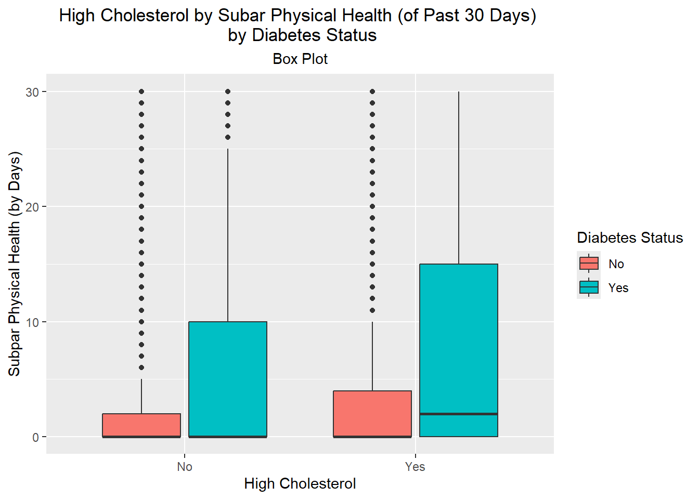
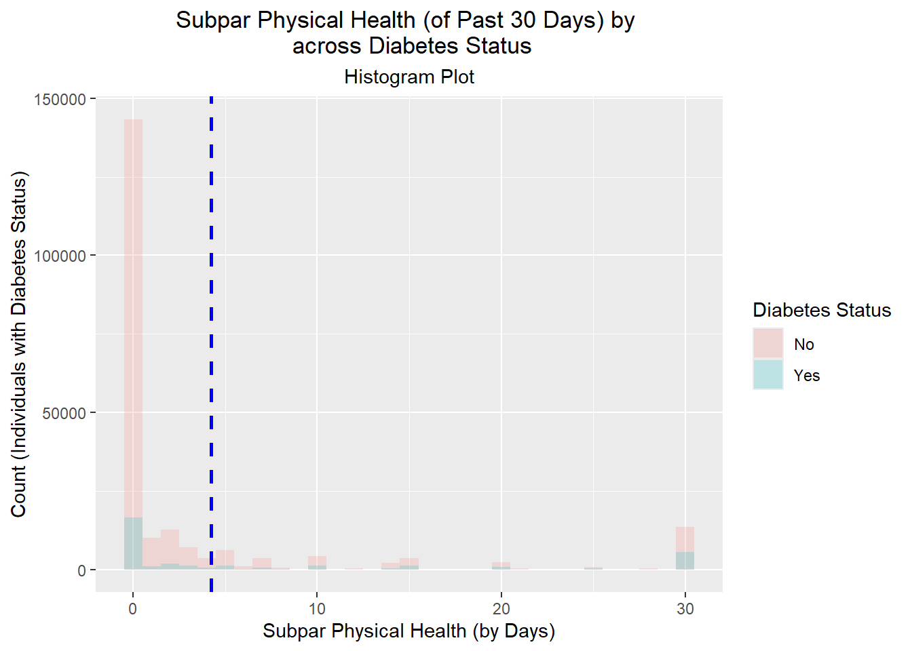

# Loading packages
library(tidyverse)
# Then we'll read in our data
diabetes_data <- read_csv("diabetes_binary_health_indicators_BRFSS2015.csv")EDA - Final Project
A Deep Dive: What variables can predict our risk of diabetes?
An Exploratory Data Analysis (EDA) for Diabetes
Introduction
Diabetes is a group of chronic diseases that occurs either when the pancreas does not produce enough insulin or when the body cannot effectively use the insulin it produces; insulin is a hormone that regulates blood glucose. In 2022, 14% of adults +18 were living with diabetes, an increase of 7% in 1990. Unmanaged diabetes can be life threatening as it can affect your blood vessels, damaging and rendering different parts of your body useless.
Using a diabetes health indicators data set containing health related information from the Behavioral Risk Factor Surveillance System (BRFSS) of the CDC collected from individuals, we’re going to create to a model to predict how different health indicators can assess the risk for diabetes. This data set contains 22 variables with 253,680 data points related to various health conditions, individual behaviors, and demographic information. Diabetes_binary indicates whether or not an individual has diabetes and will be our response variable. Some questions we’ll be investigating specifically are how high cholestorol, smoking, physical activity, sex, and education affects your risk of diabetes.
The purpose of this EDA is explore and investigate the relationships between various health indicators and the risk of diabetes. Creating the model to predict that risk is our ultimate goal. This analysis can help us determine what variables and factors are important in assessing our risk for diabetes and provide important insight on how we can better reduce our risk and can better inform our modeling efforts for predictions.
Here we will do an EDA for diabetes health indicators by completing the following steps for an EDA:
- Understanding our data, reading it in
- Completing basic validation
- Determine the rate of missing values
- Clean up the data as needed
- Investigate the distributions
- Apply transformations and repeating previous steps as needed
Data
First we’ll load in whatever packages we need and read in the data accordingly.
Now we’ll check the data for missingness and column types and values. There are no signs of any NA values, we’re good to go.
# Checking for missingness
diabetes_data %>%
is.na() %>%
colSums() Diabetes_binary HighBP HighChol
0 0 0
CholCheck BMI Smoker
0 0 0
Stroke HeartDiseaseorAttack PhysActivity
0 0 0
Fruits Veggies HvyAlcoholConsump
0 0 0
AnyHealthcare NoDocbcCost GenHlth
0 0 0
MentHlth PhysHlth DiffWalk
0 0 0
Sex Age Education
0 0 0
Income
0 # Checking column type and values
attributes(diabetes_data)$speccols(
Diabetes_binary = col_double(),
HighBP = col_double(),
HighChol = col_double(),
CholCheck = col_double(),
BMI = col_double(),
Smoker = col_double(),
Stroke = col_double(),
HeartDiseaseorAttack = col_double(),
PhysActivity = col_double(),
Fruits = col_double(),
Veggies = col_double(),
HvyAlcoholConsump = col_double(),
AnyHealthcare = col_double(),
NoDocbcCost = col_double(),
GenHlth = col_double(),
MentHlth = col_double(),
PhysHlth = col_double(),
DiffWalk = col_double(),
Sex = col_double(),
Age = col_double(),
Education = col_double(),
Income = col_double()
)Now we’ll clean the data and correct them to their respective type. Yes/No predictors will be factors. Others with multiple categories, non-continuous ones such as General Health, Education, Income, Age (because it’s in groupings of 4) will be ordinal factors and the others (BMI, Mental Health, Physical Health, Age) will become a numeric. Additionally, we’ll assign the each applicable level their respective label. Then we’ll rename them for ease of reference.
# Mutating to the correct column types
diabetes_data <- diabetes_data %>%
mutate(
Diabetes_binary = factor(Diabetes_binary, levels = c(0, 1), labels = c("No", "Yes")),
HighBP = factor(HighBP, levels = c(0, 1), labels = c("No", "Yes")),
HighChol = factor(HighChol, levels = c(0, 1), labels = c("No", "Yes")),
CholCheck = factor(CholCheck, levels = c(0, 1), labels = c("No", "Yes")),
BMI = as.numeric(BMI),
Smoker = factor(Smoker, levels = c(0, 1), labels = c("No (Smoker)", "Yes (Smoker)")),
Stroke = factor(Stroke, levels = c(0, 1), labels = c("No", "Yes")),
HeartDiseaseorAttack = factor(HeartDiseaseorAttack, levels = c(0, 1), labels = c("No", "Yes")),
PhysActivity = factor(PhysActivity, levels = c(0, 1), labels = c("No", "Yes")),
Fruits = factor(Fruits, levels = c(0, 1), labels = c("No", "Yes")),
Veggies = factor(Veggies, levels = c(0, 1), labels = c("No", "Yes")),
HvyAlcoholConsump = factor(HvyAlcoholConsump, levels = c(0, 1), labels = c("No", "Yes")),
AnyHealthcare = factor(AnyHealthcare, levels = c(0, 1), labels = c("No", "Yes")),
NoDocbcCost = factor(NoDocbcCost, levels = c(0, 1), labels = c("No", "Yes")),
GenHlth = factor(GenHlth, levels = c(1,2,3,4,5), labels = c("excellent", "very good", "good", "fair", "poor"), ordered = T),
MentHlth = as.numeric(MentHlth),
PhysHlth = as.numeric(PhysHlth),
DiffWalk = factor(DiffWalk, levels = c(0, 1), labels = c("No", "Yes")),
Sex = factor(Sex, levels = c(0, 1), labels = c("female", "male")),
Age = as.numeric(Age),
Education = factor(Education, levels = c(1,2,3,4,5,6), labels = c("no school or only kindergarten", "elementary", "some high school", "high school or GED", "some college or technical school", "college grad"), ordered = T),
Income = factor(Income, levels = c(1,2,3,4,5,6,7,8), labels = c("less than $10K", "$10K to $15K", "$15K to $20K", "$20K to $25K", "$25K to $35K", "$35K to $50K", "$50K to $75K", "more than $75K"), ordered = T)
)
# Checking column types
str(diabetes_data)tibble [253,680 × 22] (S3: tbl_df/tbl/data.frame)
$ Diabetes_binary : Factor w/ 2 levels "No","Yes": 1 1 1 1 1 1 1 1 2 1 ...
$ HighBP : Factor w/ 2 levels "No","Yes": 2 1 2 2 2 2 2 2 2 1 ...
$ HighChol : Factor w/ 2 levels "No","Yes": 2 1 2 1 2 2 1 2 2 1 ...
$ CholCheck : Factor w/ 2 levels "No","Yes": 2 1 2 2 2 2 2 2 2 2 ...
$ BMI : num [1:253680] 40 25 28 27 24 25 30 25 30 24 ...
$ Smoker : Factor w/ 2 levels "No (Smoker)",..: 2 2 1 1 1 2 2 2 2 1 ...
$ Stroke : Factor w/ 2 levels "No","Yes": 1 1 1 1 1 1 1 1 1 1 ...
$ HeartDiseaseorAttack: Factor w/ 2 levels "No","Yes": 1 1 1 1 1 1 1 1 2 1 ...
$ PhysActivity : Factor w/ 2 levels "No","Yes": 1 2 1 2 2 2 1 2 1 1 ...
$ Fruits : Factor w/ 2 levels "No","Yes": 1 1 2 2 2 2 1 1 2 1 ...
$ Veggies : Factor w/ 2 levels "No","Yes": 2 1 1 2 2 2 1 2 2 2 ...
$ HvyAlcoholConsump : Factor w/ 2 levels "No","Yes": 1 1 1 1 1 1 1 1 1 1 ...
$ AnyHealthcare : Factor w/ 2 levels "No","Yes": 2 1 2 2 2 2 2 2 2 2 ...
$ NoDocbcCost : Factor w/ 2 levels "No","Yes": 1 2 2 1 1 1 1 1 1 1 ...
$ GenHlth : Ord.factor w/ 5 levels "excellent"<"very good"<..: 5 3 5 2 2 2 3 3 5 2 ...
$ MentHlth : num [1:253680] 18 0 30 0 3 0 0 0 30 0 ...
$ PhysHlth : num [1:253680] 15 0 30 0 0 2 14 0 30 0 ...
$ DiffWalk : Factor w/ 2 levels "No","Yes": 2 1 2 1 1 1 1 2 2 1 ...
$ Sex : Factor w/ 2 levels "female","male": 1 1 1 1 1 2 1 1 1 2 ...
$ Age : num [1:253680] 9 7 9 11 11 10 9 11 9 8 ...
$ Education : Ord.factor w/ 6 levels "no school or only kindergarten"<..: 4 6 4 3 5 6 6 4 5 4 ...
$ Income : Ord.factor w/ 8 levels "less than $10K"<..: 3 1 8 6 4 8 7 4 1 3 ...# Renaming for ease of reference
diabetes_data <- diabetes_data %>%
rename('bp' = 'HighBP',
'chol' = 'HighChol',
'cholcheck' = 'CholCheck',
'bmi' = 'BMI',
'smoke' = 'Smoker',
'stroke' = 'Stroke',
'heartdiseaseorattack' = 'HeartDiseaseorAttack',
'physical' = 'PhysActivity',
'fruit' = 'Fruits',
'veg' = 'Veggies',
'alc' = 'HvyAlcoholConsump',
'healthcare' = 'AnyHealthcare',
'doc' = 'NoDocbcCost',
'genhlth' = 'GenHlth',
'menthlth' = 'MentHlth',
'physhlth' = 'PhysHlth',
'diffwalk' = 'DiffWalk',
'sex' = 'Sex',
'age' = 'Age',
'education' = 'Education',
'income' = 'Income')Summarizations
Now we’ll investigate the distributions with some basic numerical summaries and graphical visualizations such as summaries, contingency tables, correlations, and graphs.
# Producing a summary to give us the levels and the respective data points for each level and checking for total number of those with diabetes
summary(diabetes_data) Diabetes_binary bp chol cholcheck bmi
No :218334 No :144851 No :146089 No : 9470 Min. :12.00
Yes: 35346 Yes:108829 Yes:107591 Yes:244210 1st Qu.:24.00
Median :27.00
Mean :28.38
3rd Qu.:31.00
Max. :98.00
smoke stroke heartdiseaseorattack physical
No (Smoker) :141257 No :243388 No :229787 No : 61760
Yes (Smoker):112423 Yes: 10292 Yes: 23893 Yes:191920
fruit veg alc healthcare doc
No : 92782 No : 47839 No :239424 No : 12417 No :232326
Yes:160898 Yes:205841 Yes: 14256 Yes:241263 Yes: 21354
genhlth menthlth physhlth diffwalk
excellent:45299 Min. : 0.000 Min. : 0.000 No :211005
very good:89084 1st Qu.: 0.000 1st Qu.: 0.000 Yes: 42675
good :75646 Median : 0.000 Median : 0.000
fair :31570 Mean : 3.185 Mean : 4.242
poor :12081 3rd Qu.: 2.000 3rd Qu.: 3.000
Max. :30.000 Max. :30.000
sex age education
female:141974 Min. : 1.000 no school or only kindergarten : 174
male :111706 1st Qu.: 6.000 elementary : 4043
Median : 8.000 some high school : 9478
Mean : 8.032 high school or GED : 62750
3rd Qu.:10.000 some college or technical school: 69910
Max. :13.000 college grad :107325
income
more than $75K:90385
$50K to $75K :43219
$35K to $50K :36470
$25K to $35K :25883
$20K to $25K :20135
$15K to $20K :15994
(Other) :21594 count(diabetes_data)# A tibble: 1 × 1
n
<int>
1 253680- Here we can see that there’s a total of 253,680 observations in this data set. Of those observations, there are a total of 35,346 (~14%) people with diabetes. Considering our sample, the mean observation for BMI is 28.38 with minimum or 12.00 and a max value of 98. The max value seems to be an outlier given the rest of the numbers, which could potentially skew the overall distribution and might mean we have to examine it more closely. Both mental and physical health explores how many days the individual felt “not good” in the past 30 days have means of 3.19 and 4.24, respectively. These two variables also have individuals indicating that didn’t good mentally and/or physically for 30 days, which seem to be outliers… something else we might have to take a closer look at.
# Contingency tables
table("diabetes?" = diabetes_data$Diabetes_binary, "cholesterol?" = diabetes_data$chol,"smoker?" = diabetes_data$smoke), , smoker? = No (Smoker)
cholesterol?
diabetes? No Yes
No 80908 43320
Yes 6125 10904
, , smoker? = Yes (Smoker)
cholesterol?
diabetes? No Yes
No 53521 40585
Yes 5535 12782table("diabetes?" = diabetes_data$Diabetes_binary,"physical activity in 30 days?" = diabetes_data$physical) physical activity in 30 days?
diabetes? No Yes
No 48701 169633
Yes 13059 22287table("diabetes?" = diabetes_data$Diabetes_binary,"sex?" = diabetes_data$sex) sex?
diabetes? female male
No 123563 94771
Yes 18411 16935table("diabetes?" = diabetes_data$Diabetes_binary,"education level?" = diabetes_data$education) education level?
diabetes? no school or only kindergarten elementary some high school
No 127 2860 7182
Yes 47 1183 2296
education level?
diabetes? high school or GED some college or technical school college grad
No 51684 59556 96925
Yes 11066 10354 10400- Looking at the contingency tables there’s a lot we can take a look at. There’s a total of 12,782 individuals that have high cholesterol and and smoke showcasing a potential relationship between these variables with diabetes prevalence. The results show that those who’ve participate in some form of physical activity that do not have no diabetes are 169,633 individuals. Physical activity is associated with a lower diabetes prevalence, potentially reinforcing how important it is to be active. As for sex, when looking at the distribution for females and males, they’re pretty consistent in terms of total proportion in the data set for those who do or do not have diabetes. For education, it does seem that with more schooling, there’s a decrease of those, proportionally, who have diabetes compared to those who have less schooling. This could reinforce that level of education could be important in diabetes prevention.
# Correlations
diabetes_data %>%
select(where(is.numeric)) %>%
cor() bmi menthlth physhlth age
bmi 1.00000000 0.08531016 0.12114111 -0.03661764
menthlth 0.08531016 1.00000000 0.35361887 -0.09206802
physhlth 0.12114111 0.35361887 1.00000000 0.09912993
age -0.03661764 -0.09206802 0.09912993 1.00000000- We can see that BMI, body mass index, have weak positive correlations with both mental (0.0853) and physical health (0.121), meaning that there is only a slight tendency for those with a higher bmi to report “not good” days of mental and physical health. This could potentially mean that BMI alone isn’t a good predictor of both mental and physical health days and we may have to look at other variables. The largest association we see is between mental and physical health with a correlation of 0.354. This is a moderate positive correlation, meaning that they’re somewhat related, indicating that those who reported more subpar mental health days, also reported not great physical health days. This suggests that those who typically experience poor mental health days tend to experience poor physical health days, possibly due to stress, depression, problems with emotions, etc. Next we’ll start creating plots and graphs to observe our data and relationships visually, looking at various distributions and relationship.
# Side by Side bar plot of physical activity by diabetes status
ggplot(diabetes_data, aes(x = physical, fill = Diabetes_binary)) +
geom_bar(position = "dodge") +
ggtitle("Physical Activity by Diabetes Status",
subtitle = "Side by Side Bar Plot") +
labs(x = "Physical Activity", y = "Count") +
theme(plot.title = element_text(hjust = 0.5),
plot.subtitle = element_text(hjust = 0.5))
- As seen above, this represents those who have participated in some physical activity within the last 30 days and diabetes status. Overall, there are less people who do not complete physical activity compared to those who do; however, there proportion of those that don’t do physical activity and have diabetes is higher than those who do complete physical activity and have diabetes. Additionally, there’s a large amount of individuals that do physical activity and don’t have diabetes.
# Stacked bar plot of high cholesterol by diabetes with a smokers status facet
ggplot(diabetes_data, aes(x = chol, fill = Diabetes_binary)) +
geom_bar(position = "stack") +
facet_wrap(~ smoke) +
ggtitle("High Cholesterol by Diabetes Status \n with Smokers Status Facet",
subtitle = "Stacked Bar Plot") +
labs(x = "High Cholesterol", y = "Count (Individuals and their Diabetes Status)", fill = "Diabetes Status") +
theme(plot.title = element_text(hjust = 0.5),
plot.subtitle = element_text(hjust = 0.5))- Here stacked bar plots do not represent proportion but rather total count. Here can see that the total amount of people who don’t smoke and have high cholesterol are higher than those who do smoke, whereas, the other 3 categories have a similar total count. Of the total counts, we can see that those with those high cholesterol, both smokers and non-smokers, have the higher counts of those with diabetes.
# Boxplot for mental health and high cholesterol
ggplot(diabetes_data, aes(x = chol, y = physhlth, fill = Diabetes_binary)) +
geom_boxplot() +
ggtitle("High Cholesterol by Subar Physical Health (of Past 30 Days) \n by Diabetes Status",
subtitle = "Box Plot") +
labs(x = "High Cholesterol", y = "Subpar Physical Health (by Days)", fill = "Diabetes Status") +
theme(plot.title = element_text(hjust = 0.5),
plot.subtitle = element_text(hjust = 0.5))- This shows that those with high cholesterol for both with and without diabetes report more days where their physical health is “not good.” When looking at all categories, we can clearly see the horizontal mean line for those with high cholesterol and diabetes indicating that these individuals tend to report a slightly higher number of “not great” physical days compared to the other categories, which have their mean line at 0. The dots indicate data points that are considered to be outliers.
# Filled bar plot of education level by diabetes status
ggplot(diabetes_data, aes(x = education, fill = Diabetes_binary)) +
geom_bar(position = "fill") +
ggtitle("Education Level by Diabetes Status",
subtitle = "Filled Bar Plot") +
labs(x = "Education Levels", y = "Proportion", fill = "Diabetes Status") +
theme(plot.title = element_text(hjust = 0.5),
plot.subtitle = element_text(hjust = 0.5))
- This filled bar plot above shows the proportion of education by diabetes status. Red represents the individual has no diabetes and blue represents yes. As seen above, those with no schooling or only kindergarten and elementary schooling have the highest proportions of those with diabetes. As previously mentioned, this could potentially indicate that more schooling or education could help individuals to be better informed regarding diabetes risks.
# Filled bar plot sex with diabetes status and general health facet
ggplot(diabetes_data, aes(x = sex, fill = Diabetes_binary)) +
geom_bar(position = "fill") +
facet_wrap(~ genhlth) +
ggtitle("Sex by Diabetes Status \n with General Health Status Facet",
subtitle = "Filled Bar Plot") +
labs(x = "Sex", y = "Count (Individuals and their Diabetes Status)", fill = "Diabetes Status") +
theme(plot.title = element_text(hjust = 0.5),
plot.subtitle = element_text(hjust = 0.5))- The above filled bar plot looks at the proportion of sex and general health status based on diabetes status. For the most part, for each general health status there are roughly a similar amount of those who have diabetes. As seen, those who reported fair and poor health status have the highest proportion of individuals who have diabetes compared to those whom reported excellent or very good health.
# Histogram of physical health across diabetes status
ggplot(diabetes_data, aes(x = physhlth, fill = Diabetes_binary)) +
geom_histogram(alpha = 0.2, binwidth = 1, position = 'identity') +
geom_vline(aes(xintercept = mean(physhlth)),
color="blue", linetype = "dashed", linewidth = 1) +
ggtitle("Subpar Physical Health (of Past 30 Days) by \n across Diabetes Status",
subtitle = "Histogram Plot") +
labs(x = "Subpar Physical Health (by Days)", y = "Count (Individuals with Diabetes Status)", fill = "Diabetes Status") +
theme(plot.title = element_text(hjust = 0.5),
plot.subtitle = element_text(hjust = 0.5))- Here the histogram shows that majority, a little less than 150,000, of individuals report 0 “not good” physical health days irregardless of diabetes status, meaning that most people report good physical health days. However it’s interesting to note that the next highest peak is of individuals reporting having up to 30 days of “not good” physical health days. From the dashed blue line, we can see that the mean reported subpar days for the sample is around 4 days of the month.
# Hexbin plot of mental health and physical health across diabetes status
ggplot(diabetes_data, aes(x = menthlth, y = physhlth, fill = Diabetes_binary)) +
geom_hex() +
ggtitle("Subpar Mental Health (of Past 30 Days) by \n Subpar Physical Health (of Past 30 Days) \n across Diabetes Status",
subtitle = "Hexbin Plot") +
labs(x = "Mental Health (by Days)", y = "Physical Health (by Days)", fill = "Diabetes Status") +
theme(plot.title = element_text(hjust = 0.5),
plot.subtitle = element_text(hjust = 0.5))
- Here we have a hexbin plot of “not good” mental health days by “not good” physical health days across diabetes status. Each bin is a hexagon and the color represents the number of data points within each bin. For the lower reported mental and physical days (under 10), there is a concentration of those people that have diabetes. There’s a significant spread across both axes, showing variability across the diabetes status. Additionally, there are gaps in certain areas of the plot indicating there’s none or not many data points in the respective bin.
# Density plot of BMI by diabetes status
ggplot(diabetes_data, aes(x = bmi, fill = Diabetes_binary)) +
geom_density(alpha = 0.6) +
geom_vline(aes(xintercept = mean(bmi)),
color="blue", linetype = "dashed", linewidth = 1) +
ggtitle("BMI by Diabetes Status",
subtitle = "Density Plot") +
labs(x = "BMI", y = "Density", fill = "Diabetes Status") +
theme(plot.title = element_text(hjust = 0.5),
plot.subtitle = element_text(hjust = 0.5))- Last, we have density plot! This density plot visualizes the distribution of BMI values for those with and without diabetes. Here we can see that the peak for both diabetes status are around a BMI of 28, indicating that both groups have most individuals at a BMI of 28. The dashed blue line indicates the mean of around 28 for BMI. When looking at the density for those without diabetes (red), the curve is more tall and narrow compared to the yes diabetes status, indicating that people without diabetes tend to have lower BMIs. Those with diabetes (blue) density curve shifted more to the right indicated that individuals with diabetes tend to have a higher BMI.
That’s a lot of interesting variables and distributions that we’ve looked at! I never really thought about all of the potential variables that could perhaps contribute to or reduce the risk of obtaining diabetes. Now that we’ve completed our EDA, we’re going to create our modeling file that’ll help us predict our diabetes risk.